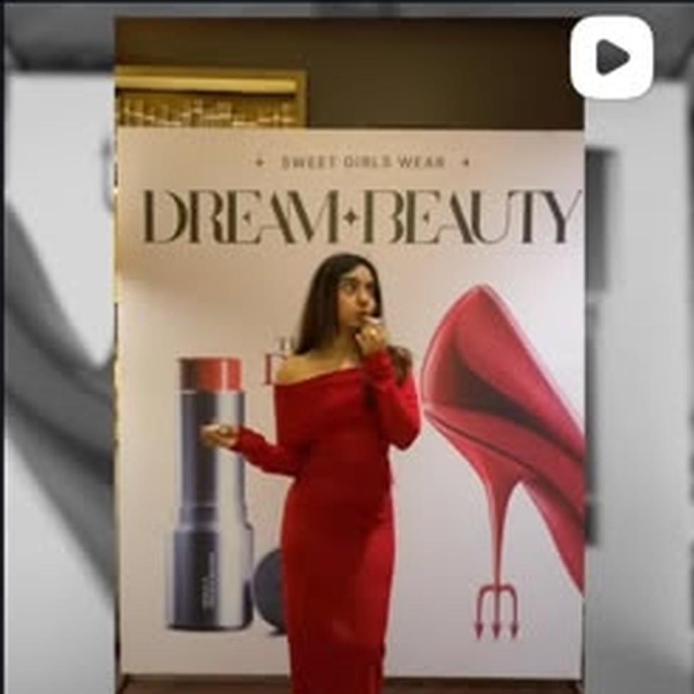
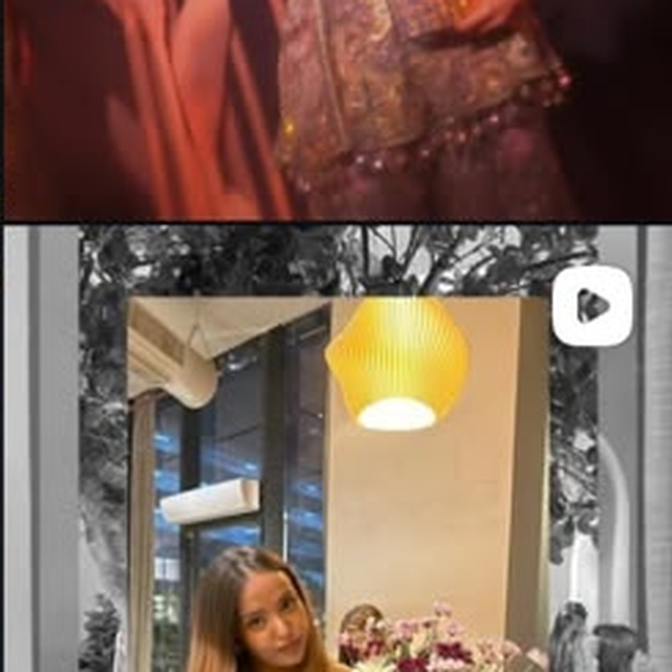
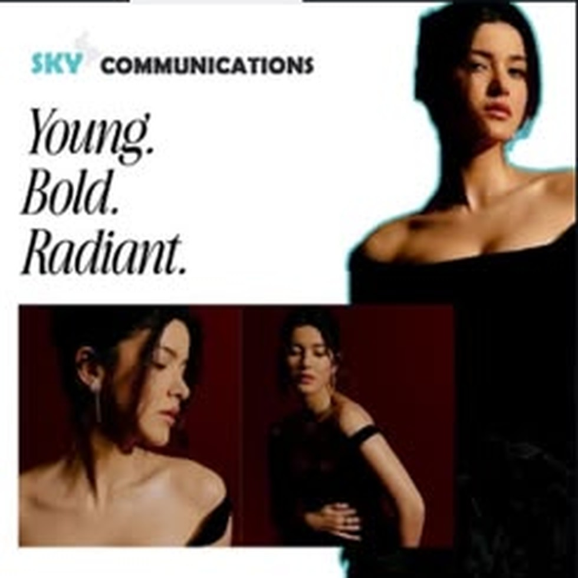
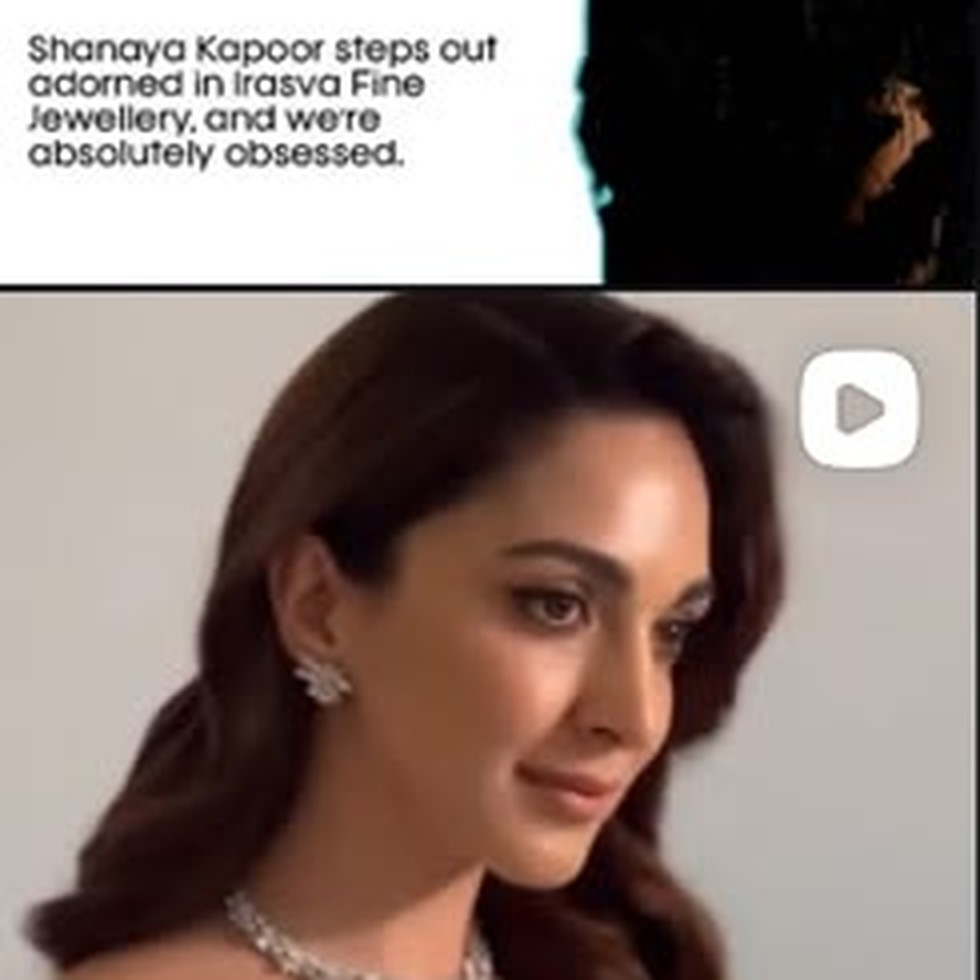
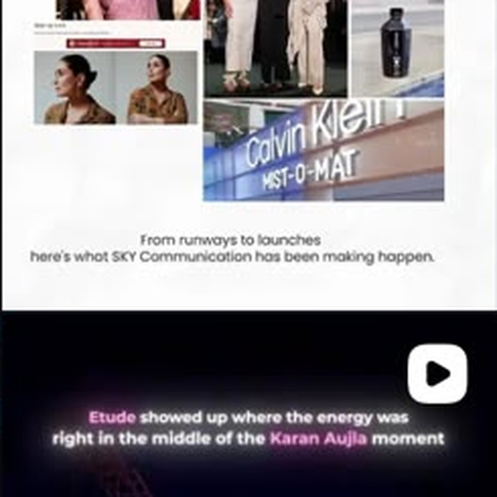
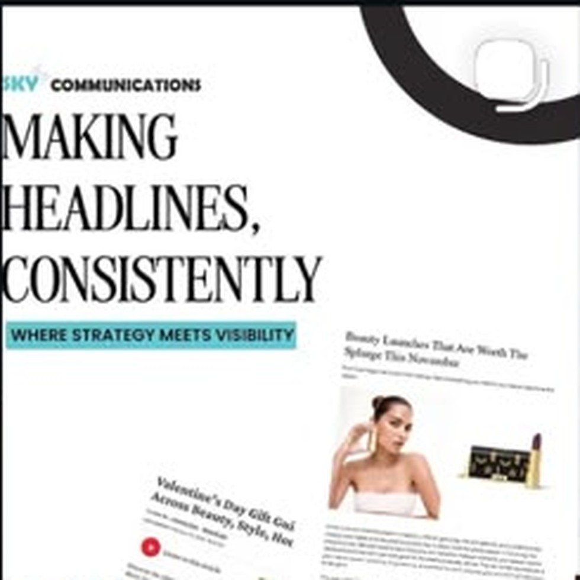
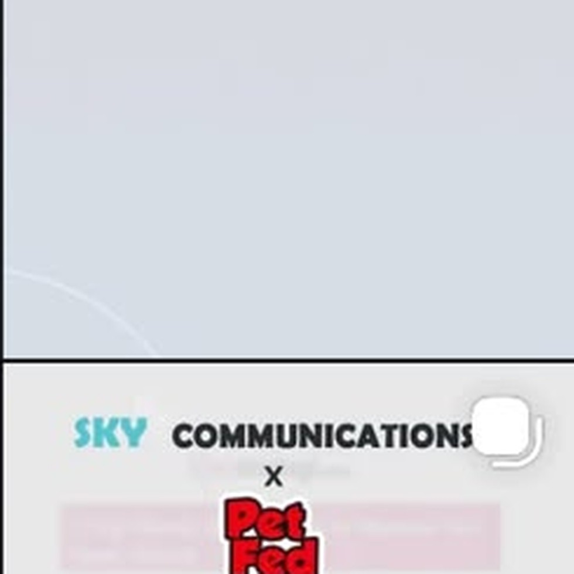
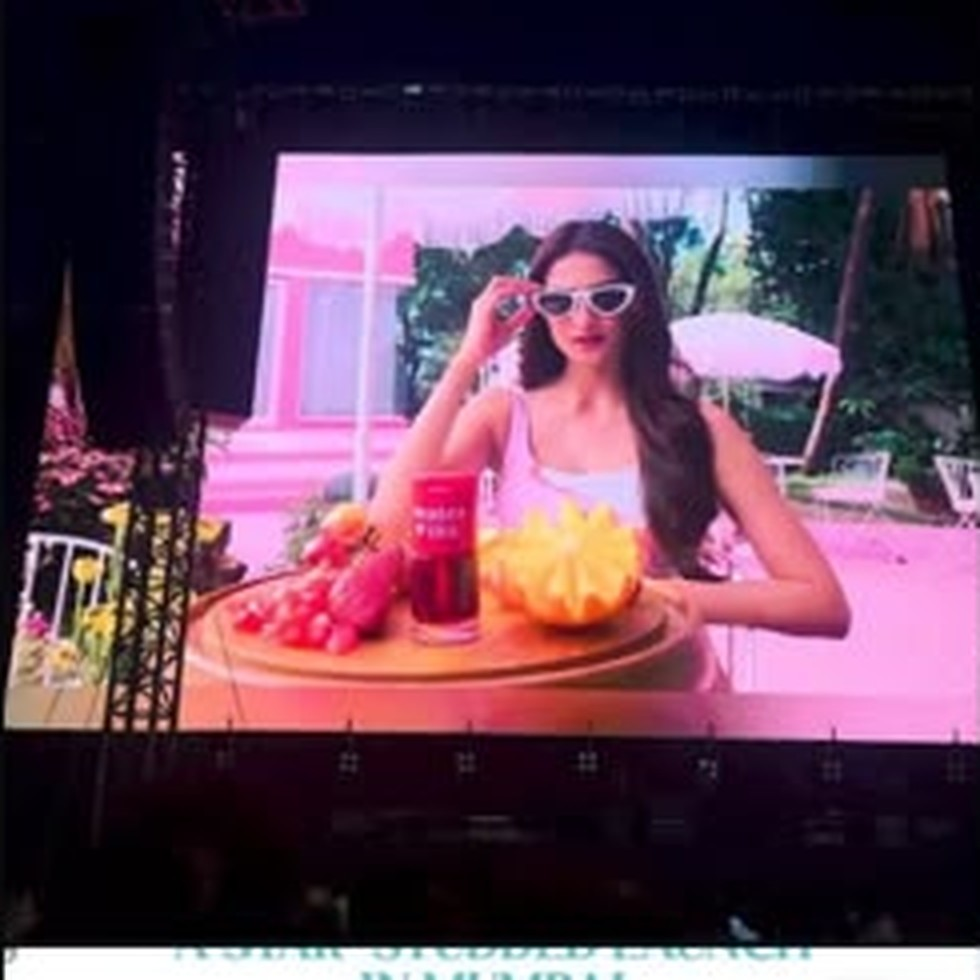

MAKE THE WORLD LOOK. Then give it something to say.
Sky Communications is a PR + marketing agency building visibility, conversations and cultural moments for luxury, lifestyle and corporate brands.
The agency’s original philosophy was built around honest, long-term media relationships. The new Sky turns that same relationship-first DNA into a modern system spanning PR, events, influence, content, media and brand.
THE RECEIPTS.
Recent moments from fashion, beauty, jewellery and experiential campaigns — presented as stories, not a graveyard of client logos.


Influence / CollaborationWE MOVE
ATTENTION.
Ten capabilities, one connected system. Hover, tap, explore — then take the full route through our services.
Real coverage. Real conversations. Real impact. The work only matters when visibility leads somewhere.
The Sky visual archive.

Editorial visibility
Celebrity placement
Live experience
Media headlines
Special projects
Culture moments